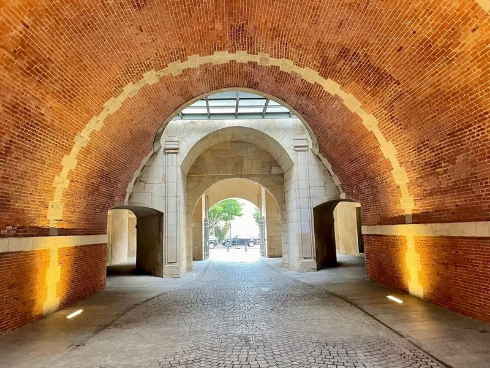
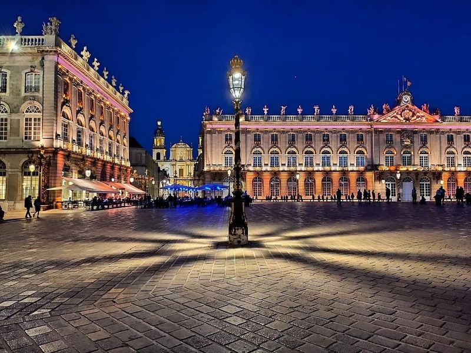
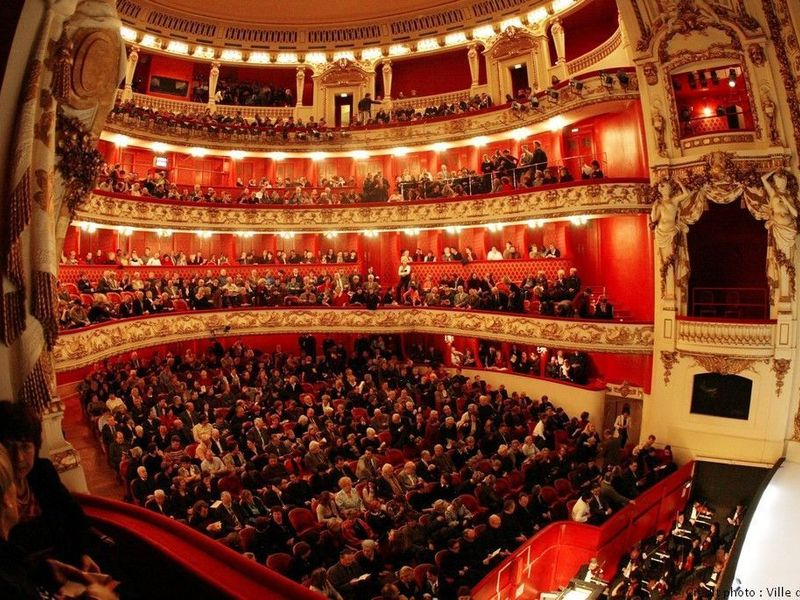
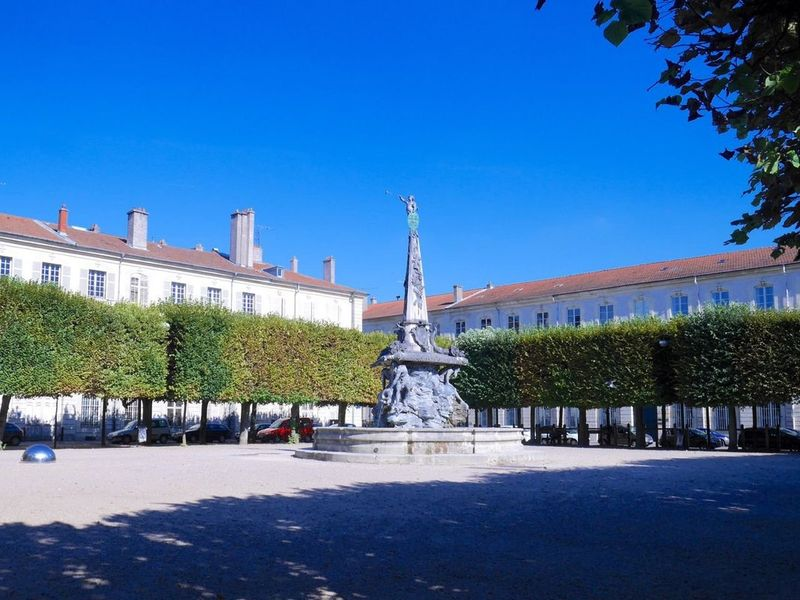
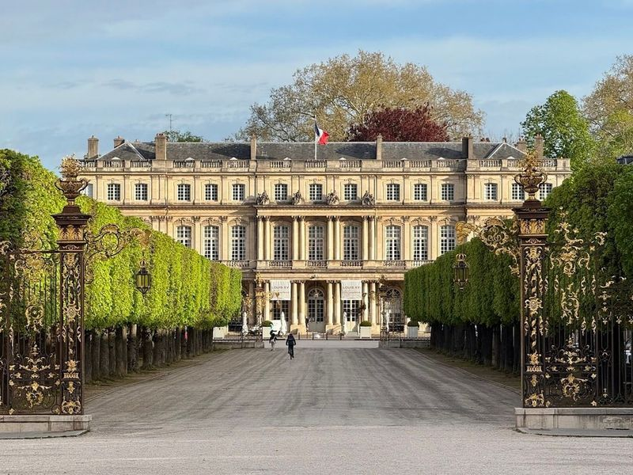
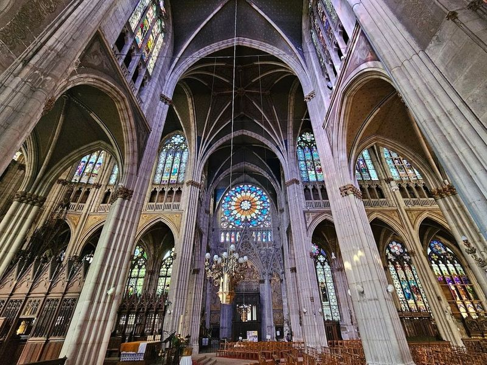
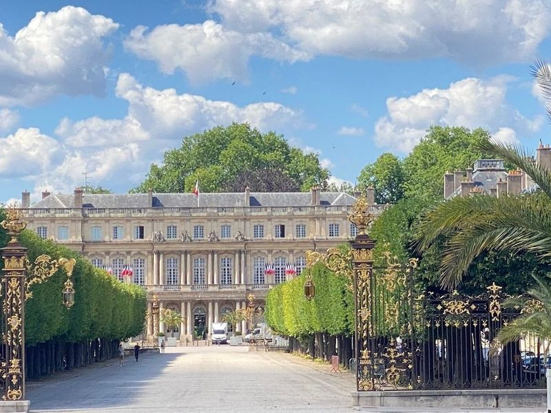
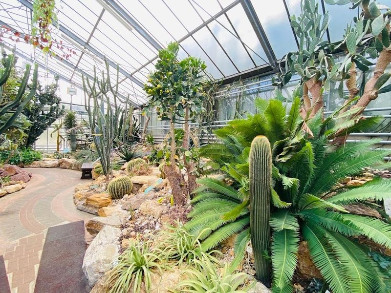
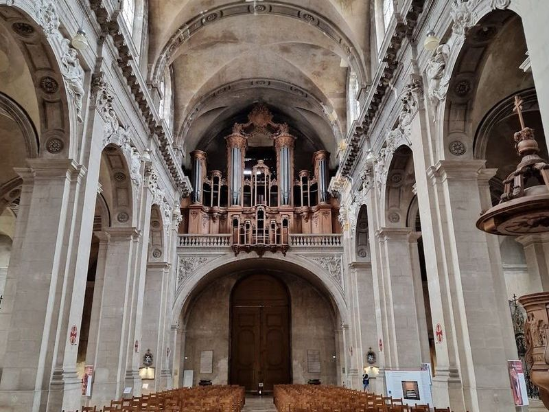
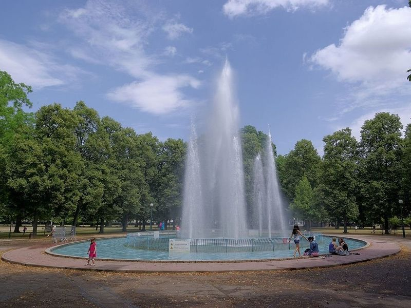

Explore Nancy
A Brief History
Nancy flourished as capital of the duchy of Lorraine, especially under exiled Polish king Stanislas Leszczyński, who rebuilt squares, gates, and a fine arts academy in the mid-eighteenth century. The medieval old town and Renaissance ducal palace preserve earlier Burgundian and Habsburg ties. Art Nouveau workshops led by Émile Gallé and Louis Majorelle later gave Nancy a decorative arts reputation, while universities and steelmaking linked the city to modern Lorraine industry.
Attractions Map
Top Sights & Activities

Porte de la Craffe
Porte de la Craffe is a restored gate located in the 14th-century defense wall of the city. It features bas reliefs and two watchtowers, offering a glimpse into the historical significance of the area. The gate is part of the rich cultural heritage found in the capital of the Dukes of Lorraine. travellers can explore various attractions such as Place Stanislas, a UNESCO World Heritage Site, with its impressive Golden doors and Rococo fountains.

Place Stanislas
Place Stanislas is a neoclassical square in Nancy, France, recognized as a UNESCO World Heritage Site. Designed by Emmanuel Here in the 1750s, this grand space is named after the enlightened Duke of Lorraine and features his statue at its center. Surrounded by elegant 18th-century buildings like the Opera National de Lorraine and the City Hall, travellers can admire exquisite gilded gates crafted by Jean Lamour and rococo fountains designed by Guibal.

Opéra national de Lorraine
Opéra national de Lorraine, located in Nancy, is a venue that offers ballet performances by the Centre Choregraphique National Ballet de Lorraine. The building houses an impressive auditorium where the Nancy Symphony Orchestra provides enchanting musical accompaniment. travellers can easily book tickets online for reasonably priced shows and workshops, making it a must-visit destination for an evening of dance and music.

Alliance Square
The Alliance Square is a renowned location in the French city of Paris, which is well known for its Place de la Carriere and prominent Place Stanislas. The square features great views of the city surroundings and is also located close to the symbolical Palais du Gouvernement.

Place de la Carrière
Place de la Carrière is a picturesque square with a rich history dating back to the 16th century. It is flanked by historical buildings such as the Palais du Gouverneur and Fermee par l'Arc Here. The square has been a venue for various events, from medieval tournaments to modern-day competitions like the 24 Heures de Stan' and literary events like Le Livre sur la Place.

Basilica of Saint Epvre of Nancy
The Basilica of Saint Epvre in Nancy is a neo-Gothic church constructed in the 19th century, boasting stained glass windows and a choir pavement made from stones originating from the Appian Way. Endowed with riches by notable figures such as Napoleon III and Pope Pius, the basilica also houses a collection of paintings contributed by artists from various European countries.

Government Palace - Palace Garden
The Government Palace, also known as the Palace Garden, is a must-visit destination in Nancy. This historical site is part of the capital of the Dukes of Lorraine and has been recognized as a UNESCO World Heritage Site since 1983. The palace boasts architecture with striking golden doors and Rococo fountains surrounding it.

Jean-Marie Pelt Botanical Garden
The Jean-Marie Pelt Botanical Garden, located in Villers-les-Nancy, France, is a sprawling 25-hectare oasis boasting an impressive collection of over 12,000 plant species from around the globe. This expansive garden features diverse attractions such as a rhododendron valley, an arboretum, and five tropical greenhouses showcasing exotic flora like orchids, water-lilies, coffee plants, banana trees, citrus trees, and various cacti species.

Nancy Cathedral
Nancy Cathedral, a Baroque masterpiece dating back to the 1700s, is a sight to behold in the city of Nancy. Located near the Place Stanislas and the opulent Ducal Palace, this cathedral stands out with its Italian-inspired design by Giovanni Betto. The interior boasts a serene atmosphere with minimal carvings but features a striking painted dome dedicated to heavenly glory by Claude Jacquart.

Parc de la Pépinière
Parc de la Pépinière, also known as La Pep by locals, is a lush 21-hectare park nestled in the heart of Nancy's historic center. Originally a royal nursery established by Stanislas, it was transformed into a public park in 1835 while preserving its original layout. The park features wooded areas, a rose garden, and a grid of alleys flanked by flowerbeds and statues including one by Auguste Rodin.